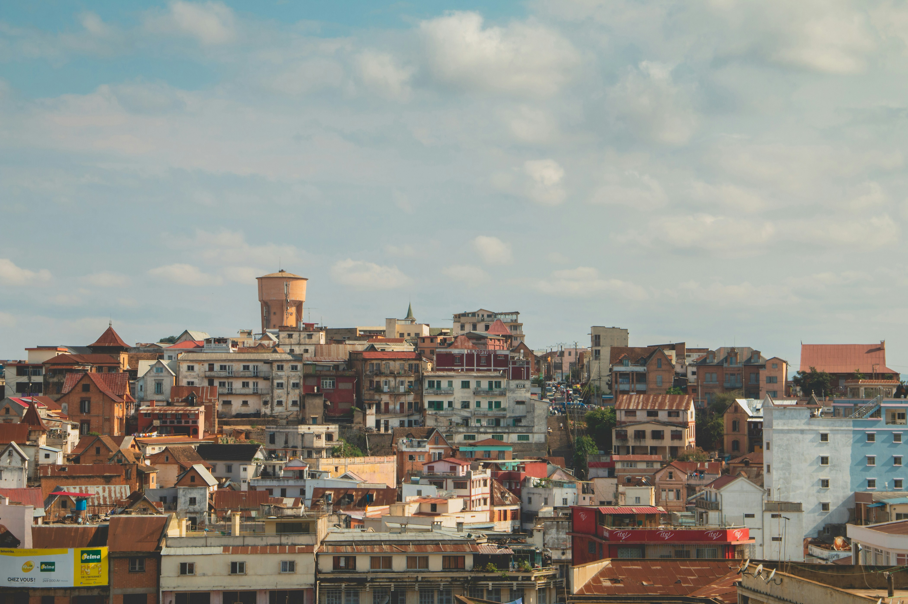
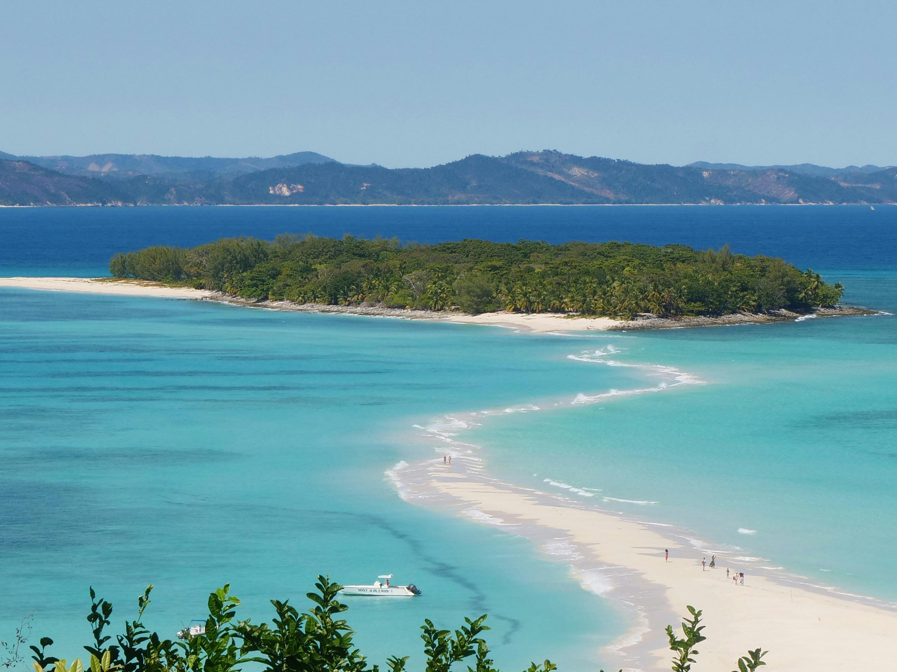

Kuhu soovin minna
Reisida on vaja, et kogeda kontraste ja rikkust, mida meie planeet pakub
Jaapan
Aasia
Jaapan on lummav sihtkoht, kus ülimoodne tehnoloogia kohtub sügavalt juurdunud traditsioonidega. Reisimine pakub haruldast kontrasti: ühest küljest Tokyo neoonvalgustatud energiat ja Fuji mäe ikoonilist suursugusust, teisalt Kyoto iidseid templeid, zen-aedu ja viisakust. Jaapani kogemus on erakordselt puhas, turvaline ja organiseeritud, lisaks pakub maailmakuulus köök (sushi, ramen) unustamatut gastronoomilist naudingut. See on riik, mis pakub kultuuri, ilu ja seiklust igale külastajale.


Madagaskar
Aafrika
Madagaskar on kordumatu reisisihtkoht, mida kutsutakse ka "kaheksandaks kontinendiks", kuna seal on ainulaadne segu endogeensest elusloodusest ja kaunitest troopilistest maastikest. Riigi peamine tõmbenumber on leemurid ja ahvileivapuud (baobab'id), mida ei leidu kusagil mujal maailmas. Lisaks pakub saar avastamisrõõmu kaltsukivist Tsingy maastike ja rikkalike rannikualade näol. Madagaskar on tõeline looduslabor ja seiklus, mis pakub sügavat ning kordumatut kontakti loodusega.
 Peruu
Lõuna-Ameerika
Peruu on erakordne reisisihtkoht, mis pakub täiuslikku segu rikkalikust ajaloost, hingematvast loodusest ja maailmatasemel gastronoomiast. Riigi peamiseks tõmbenumbriks on kahtlemata Machu Picchu, kuid Peruu pakub palju enamat: siin kohtuvad majesteetlikud Andide mäeahelikud (koos Vikerkaaremäega), lopsakas Amazonase vihmamets ja Vaikse ookeani omapärane rannik. Sügavalt juurdunud inkade ja pre-inka tsivilisatsioonide pärand on tunda igal sammul, eriti ajaloolises Cusco linnas. Lisaks pakub Peruu köök, oma ceviche ja pisco sour'iga, unustamatut naudingut igale gurmaanile. Lühidalt – Peruu on seiklus, ajalugu ja kultuur, mis ootab avastamist.